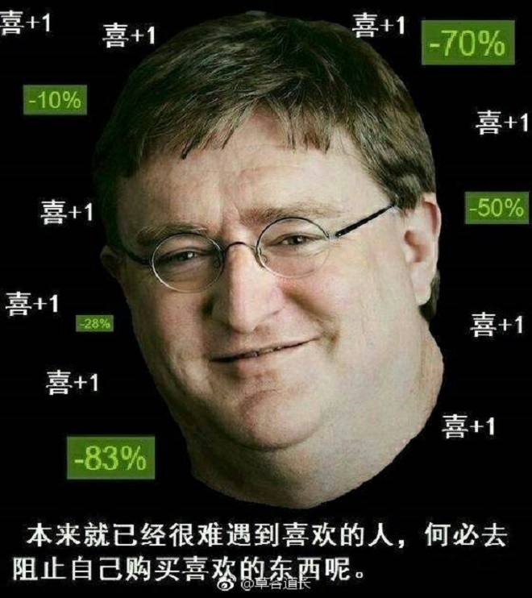

-
Steam是美国电子游戏商 威尔乌于2003年9月12日推出的 数字发行、 数字版权管理及社交系统，它用于数字软件及游戏的发行销售与后续更新，支持 Windows、 OS X和 Linux等操作系统，是目前全球最大的 PC电子游戏平台。
-
在Steam推出之前，维尔福公司在发布 电子游戏更新时遇到了难题。当中一个《 反恐精英》游戏的更新导致大量在线玩家断线。此后，维尔福团队决定要制作一个软件，就是能为游戏自动更新的Steam平台。Steam亦集成反盗版及反作弊系统。在正式制作前，Valve公司曾接触多个公司以合作开发平台，当中有 微软、 雅虎，但被拒绝
- 2002年中开发Steam，以“Grid”（网格）及“Gazelle”（羚羊）为计划代号。Steam的首次公开亮相是在2002年3月22日的 游戏开发者大会中，当时的Steam是以 分散网络的概念来设计。为了展示Steam平台的集成性， Relic Entertainment特别设计了一特别版本的 不可能的特性（Impossible Creatures），但最终该版本并没有在Steam上推出。
- 2002年4月，Valve公司在此计划中和多个公司合作，包括 AT&T、 宏碁及 GameSpy。而第一个被推出的 游戏模块是《 胜利之日》。
- 2002年，第一个Steam客户端面世。其主要功能是精简电脑游戏的更新程序，同时为《 反恐精英》1.6进行公测。玩家下载的测试版游戏与Steam软件绑定，而Steam服务器因为数十万对反恐精英的下载请求而不胜负荷。
- 2004年，Steam平台取代了世界对抗网络系统（WON），本来需要后者来登录连机模式的游戏全转移到了Steam平台。
-
经过一段时间的试验，Valve开始联系不同的 游戏发行商和 独立游戏开发者签署合约并为他们提供Steam平台的游戏销售服务。两个最早期在Steam平台上推出的独立游戏是 Rag Doll Kung Fu和 Darwinia。其后，2005年12月，加拿大游戏发行商 Strategy First亦继而和Valve合作，成为第一个于Steam平台上推出游戏的发行商。
盈利
- 2005年，第一波第三方游戏开始在Steam平台上出现。同期， Valve亦表示Steam从自己推出的游戏中开始获得盈利。虽然 数字发行的销售模式的售出量仍远远不及零售发行，但以Valve及开发商从中所获得的利润来看，以此方式来售卖游戏还是高于零售方式。
- 2007年，部分规模较大的游戏开发发行商，例如 id Software、 Eidos Interactive和 Capcom等开始加入Steam以销售他们的游戏。同年五月，Steam平台上已经有一千三百万个账号被创建，及共有150个游戏在Steam上售卖。及后十月，Steam平台上亦陆续推出了《 橙盒》、《 生化奇兵》、《 使命召唤4：现代战争》和《 浩劫杀阵：切尔诺贝利的阴影》等等的高知名度游戏。
简介
早期
GABE!!!
